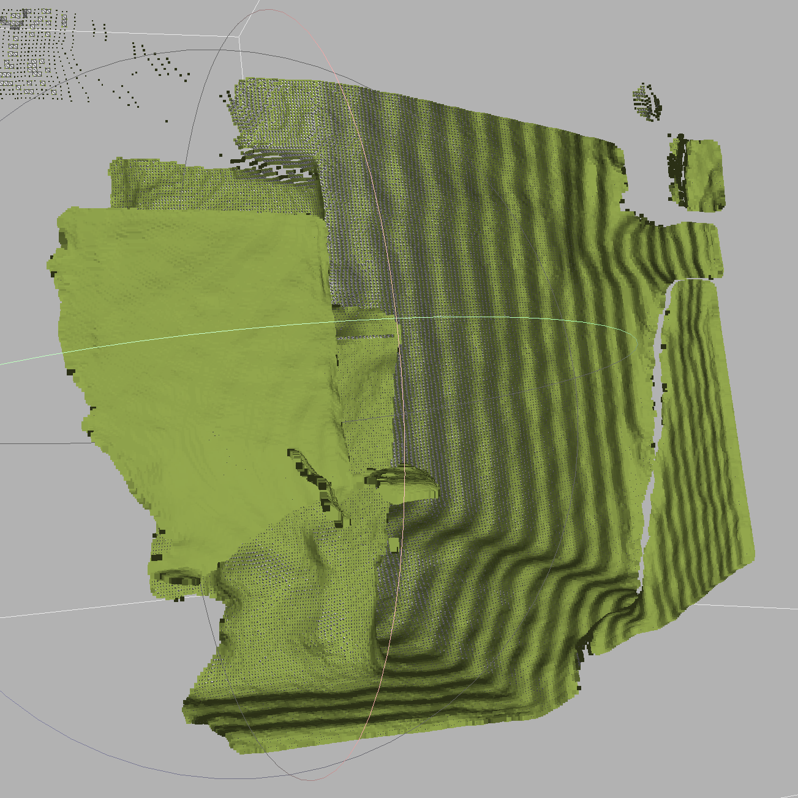

Use Intel Realsense2 SDK and an D455 or an L515 device to save cloud point files in .ply format, automatically and at a high speed
Pre-requisites : Basic knowledge on c, c++, Intel Realsense2 SDK and data structure of the .ply format
In our project, we need to use an Intel device, connected to a Raspberry terminal, to collect point clouds data , efficiently and in a reliable way. Here we choose to develop a data saving system using Realsense2 SDK in c++. In order to collect the data as fast as possible, we added a function to the SDK, in which the point cloud data is collected without texture information. The whole system is tested on a x86 laptop platform and a Raspberry 3 platform.
1. General description
Follow the tutorial here, download, compile and install the Realsense2 SDK。If the texture information is needed, you can download the official version here instead of the customized version. If you want to maximize the speed of the data recording, download here the customized SDK. The customized SDK is based on the official version in early 2021 and may not be updated in the future. It is only tested on a Linux system, the kernel version should be 5.4.0 or earlier.
If an official SDK is already installed before, use the following commands to install the customized version. Consider to add a multicore compiling flag to save the time, which can be long.
mkdir build && cd build
cmake ../ -DCMAKE_BUILD_TYPE=Release
sudo make uninstall && make clean && make && sudo make install
2. Methods
Here we set the resolution of the depth data flow then start it. To maximize the speed of saving a group of data, we provide the option to choose the lowest resolution, which can vary according to the device. For example, the lowest resolution supported by L515 is 320*240, while for D455 it is 424*240. Generally, the amount of data to be processed using the lowest resolution is about 1/4 for the default resolution 640*480.
rs2::pipeline pipe;
rs2::config cfg;
if (config.if_lowres() == 0) {
cfg.enable_stream(RS2_STREAM_DEPTH, 640, 480, RS2_FORMAT_ANY, 0);
} else if (config.if_lowres() == 5) {
cfg.enable_stream(RS2_STREAM_DEPTH, 424, 240, RS2_FORMAT_ANY, 0);
} else {
cfg.enable_stream(RS2_STREAM_DEPTH, 320, 240, RS2_FORMAT_ANY, 0);
}
pipe.start(cfg);
Get the depth frame and the RGB frame. We decide which data to use, later according to the parameters given by user.
rs2::frameset frames = pipe.wait_for_frames();
auto depth = frames.get_depth_frame();
auto color = frames.get_color_frame();
Decide whether the texture information will be taken into account or not. The export_to_ply_notexture function, newly added to the SDK, export the depth data without texture.
if (ifColor == 1) {
// Map the point cloud to the given color frame
pc.map_to(color);
// Generate the point cloud
rs2::points points = pc.calculate(depth);
// Export the point cloud to a PLY file with colors
points.export_to_ply(ply_file.str(), color);
} else if (ifColor == 0) {
// Generate the point cloud
rs2::points points = pc.calculate(depth);
// Export the point cloud to a PLY file without colors
points.export_to_ply_notexture(ply_file.str());
}
Decide if the images will be saved, according to the given parameters. In default mode, we get 3 images : depth, RGB and infrared, as well as a .ply file. To maximize the speed of data recording, we can choose to save the .ply file only.
for (auto&& frame : frames)
{
// We can only save video frames as pngs, so we skip the rest
if (auto vf = frame.as<rs2::video_frame>())
{
// Use the colorizer to get an rgb image for the depth stream
if (vf.is<rs2::depth_frame>()) vf = color_map.process(frame);
// Write the corresponding images to disk, according to the given parameters
std::stringstream png_file;
if (vf.get_profile().stream_name() == "Depth") {
if (ifDepth) {
png_file << direction << currenttime << vf.get_profile().stream_name() << ".png";
stbi_write_png(png_file.str().c_str(), vf.get_width(), vf.get_height(), vf.get_bytes_per_pixel(), vf.get_data(), vf.get_stride_in_bytes());
std::cout << "Saved " << png_file.str() << std::endl;
// Record the metadata
std::stringstream csv_file;
csv_file << direction << currenttime << vf.get_profile().stream_name()
<< "-metadata.csv";
metadataToCsv(vf, csv_file.str());
}
}
if (vf.get_profile().stream_name() == "Infrared") {
if (ifInfr) {...}
}
if (vf.get_profile().stream_name() == "Color") {
if (ifImages) {...}
}
}
}
The saved .ply file can be visualized by applications such as meshlab, or given to other analytic algorithms.
3.Benchmarks
Here we did some basic benchmarks to see the differences to the default method and our customized method of data recording. First we did the benchmark on the x86 laptop platform and calculate the average time spent on generating each (group of) file.
Hardware: Ubuntu 20.04.2 LTS 5.4.0-70-generic，i5-1035G7 CPU @ 1.20GHz，NVMe Micron CT1000P1SSD8
Default (save 3 images and 1 point cloud file): 0.8s
./datasaving -r 1 -d 1 -f 1 -c 1 -l 0
Only save the point cloud file with default configuration (with texture information and use the default resolution): 0.55s
./datasaving -c 1 -l 0
Only save the point cloud file without the texture information and using the lowest resolution: 0.1s
./datasaving -l 1
Conclusion: If the texture information and a high resolution are not needed in the project, it is possible to get the cloud point file as fast as 0.1 second per file. The speedup is about 800%.
The program is also tested on a Raspberry 3 with an SD card. The maximal data saving speed is about 0.4s per point cloud file, using the lowest resolution and no texture file. Considering that the performance is far lower than a x86 platform, it is a satisfying result.
4. Robustness
In order to use the program in an industrial, unsupervised and long-time-spam environment, accidental crash or system restart after a power should be taken into account. A bash program is made, which :
1，Supervises the main process in background. If the a process disappears, restart it.
2，When restarting the process, use the parameters previously given. If the number of data is inferior to the target number, then adjust number of data yet to be saved automatically.
#!/bin/bash
while true
do
# find a particular process, excluding this process itself
ps -ef | grep "datasaving" | grep -v "grep" | grep -v "nautilus"
# compare the returned value with 1 (the process is found or not)
if [ "$?" -eq 1 ]
then
# read all lines in parameters' file into an array
mapfile data <parameters.txt
# extract the 2 parameters
n="${data[0]}"
i="${data[1]}"
# check if all works are done
if [ $n -eq 0 ]
then
exit 0
fi
# length of the array
leng=${#data[@]}
# calculate how many groups of data is there to be saved yet
if [ $n -ne -1 ]; then n=$((n - leng + 2)); fi
# restart the process
(./datasaving -i $i -n $n)
echo "process restarted"
else
echo "process exists"
fi
sleep 10
done
Test : kill the process manually when the data is being recorded, the process can reboot automatically and the parameters can be loaded successfully. If we need to launch the main process automatically after a system reboot, the program here above should be added to the rc.local file.